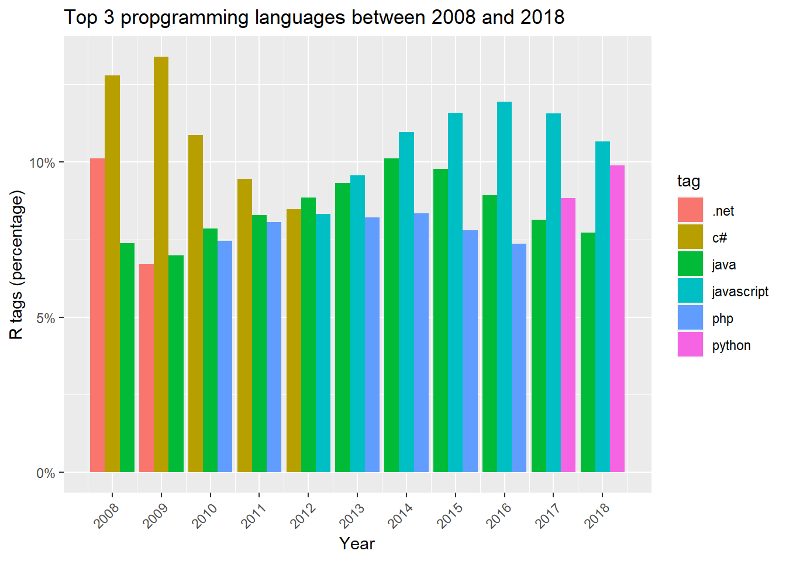
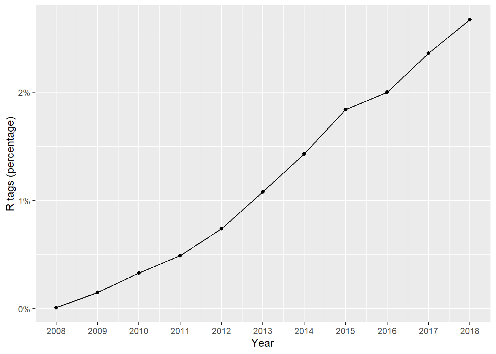

library(tidyverse)Programming languages history
First look at data
We load the tidyverse library
and then we load the dataset and give a first look to the data
by_tag_year <- read_csv("by_tag_year.csv")
by_tag_year# A tibble: 40,518 × 4
year tag number year_total
<dbl> <chr> <dbl> <dbl>
1 2008 .htaccess 54 58390
2 2008 .net 5910 58390
3 2008 .net-2.0 289 58390
4 2008 .net-3.5 319 58390
5 2008 .net-4.0 6 58390
6 2008 .net-assembly 3 58390
7 2008 .net-core 1 58390
8 2008 2d 42 58390
9 2008 32-bit 19 58390
10 2008 32bit-64bit 4 58390
# … with 40,508 more rowsAlong with year and tag, we have two other variables, number and year_total. The first one counts the number of questions posted with the tag, and the second one is the total number of questions in the year.
Tag percentage
We want to look at the percentage of tag questions over total ones (per year)
by_tag_year_perc <- by_tag_year |>
mutate(
percentage = round(number /year_total * 100, 2)
)
by_tag_year_perc# A tibble: 40,518 × 5
year tag number year_total percentage
<dbl> <chr> <dbl> <dbl> <dbl>
1 2008 .htaccess 54 58390 0.09
2 2008 .net 5910 58390 10.1
3 2008 .net-2.0 289 58390 0.49
4 2008 .net-3.5 319 58390 0.55
5 2008 .net-4.0 6 58390 0.01
6 2008 .net-assembly 3 58390 0.01
7 2008 .net-core 1 58390 0
8 2008 2d 42 58390 0.07
9 2008 32-bit 19 58390 0.03
10 2008 32bit-64bit 4 58390 0.01
# … with 40,508 more rowsWhat are the most used tags for each year?
by_tag_year_perc |>
group_by(year) |>
arrange(desc(percentage)) |>
filter(row_number() == 1) |>
arrange(year)# A tibble: 11 × 5
# Groups: year [11]
year tag number year_total percentage
<dbl> <chr> <dbl> <dbl> <dbl>
1 2008 c# 7473 58390 12.8
2 2009 c# 46044 343868 13.4
3 2010 c# 75501 694391 10.9
4 2011 c# 113408 1200551 9.45
5 2012 java 145640 1645404 8.85
6 2013 javascript 197101 2060473 9.57
7 2014 javascript 237415 2164701 11.0
8 2015 javascript 257006 2219527 11.6
9 2016 javascript 265896 2226072 11.9
10 2017 javascript 266762 2305207 11.6
11 2018 javascript 115726 1085170 10.7 We can see that the most used tags are c# from 2008 to 2011 and javascript from 2013 to 2018, while 2012 winner was java.
Most used programming languages
We can expand our analysis by considering the top 3 languages for each year
top_three <- by_tag_year_perc |>
group_by(year) |>
arrange(desc(percentage)) |>
filter(row_number() %in% c(1,2,3)) |>
arrange(year)
top_three# A tibble: 33 × 5
# Groups: year [11]
year tag number year_total percentage
<dbl> <chr> <dbl> <dbl> <dbl>
1 2008 c# 7473 58390 12.8
2 2008 .net 5910 58390 10.1
3 2008 java 4315 58390 7.39
4 2009 c# 46044 343868 13.4
5 2009 java 24023 343868 6.99
6 2009 .net 23076 343868 6.71
7 2010 c# 75501 694391 10.9
8 2010 java 54519 694391 7.85
9 2010 php 51790 694391 7.46
10 2011 c# 113408 1200551 9.45
# … with 23 more rowsSince the table is too long to be seen entirely, we plot a bar graph
top_three |>
ggplot(aes(x = year, y = percentage/100, fill = tag)) +
geom_bar(position="dodge", stat="identity") +
scale_x_continuous(breaks = 2008:2018) +
scale_y_continuous(labels = scales::percent) +
labs(title = "Top 3 propgramming languages between 2008 and 2018", x = "Year", y = "R tags (percentage)", color = "Tags") +
theme(axis.text.x = element_text(angle = 45, vjust = 1, hjust=1))
What about R?
Let’s see the percentages about R
r_over_time <- by_tag_year_perc |>
filter(tag == "r")
r_over_time# A tibble: 11 × 5
year tag number year_total percentage
<dbl> <chr> <dbl> <dbl> <dbl>
1 2008 r 8 58390 0.01
2 2009 r 524 343868 0.15
3 2010 r 2270 694391 0.33
4 2011 r 5845 1200551 0.49
5 2012 r 12221 1645404 0.74
6 2013 r 22329 2060473 1.08
7 2014 r 31011 2164701 1.43
8 2015 r 40844 2219527 1.84
9 2016 r 44611 2226072 2
10 2017 r 54415 2305207 2.36
11 2018 r 28938 1085170 2.67We can plot a graph to better understand the trend
r_over_time |>
ggplot(aes(x = year, y = percentage/100)) +
geom_point() +
geom_line() +
scale_x_continuous("Year", breaks = 2008:2018) +
scale_y_continuous("R tags (percentage)", labels = scales::percent)
It seems that R language has become more popular over the years.